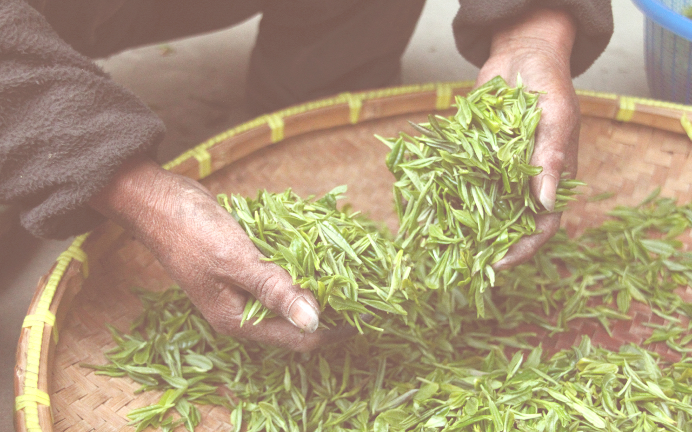
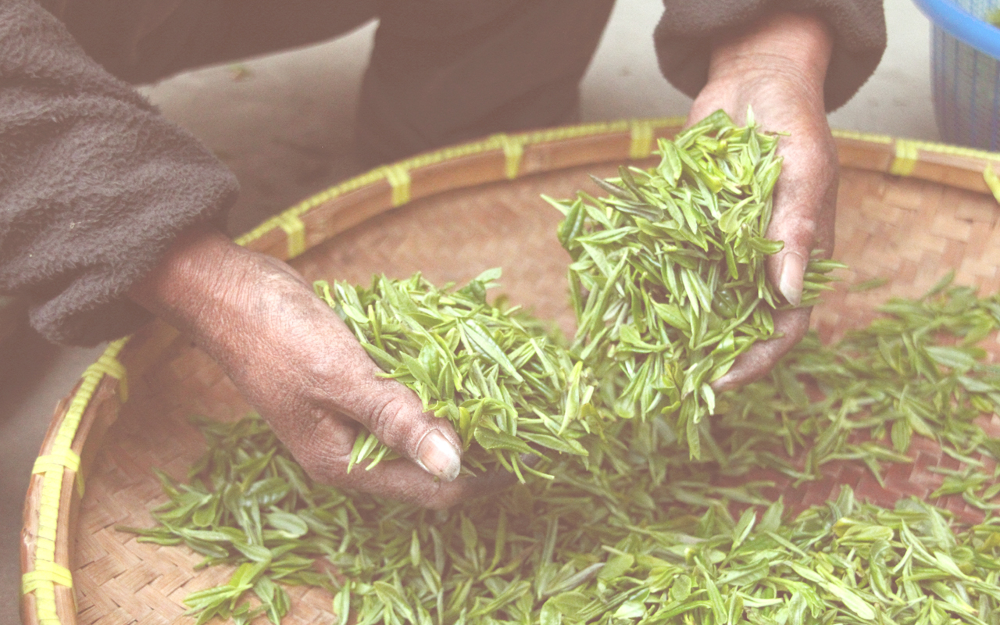

El té es una bebida utilizada habitualmente por la medicina natural de las civilizaciones orientales para aprovechar sus propiedades terapéuticas. Algunas de sus versiones son:
Disminuye la absorción de colesterol y reduce la posibilidad de sufrir enfermedades cardiovasculares.
Reduce la formación de coágulos anormales favoreciendo nuestro corazón, además disminuye los niveles de azúcar.
Para la depresión, la melancolía y el mal humor. Adicionalmente facilita la digestión, ayuda a desintoxicar el organismo.
Disminuye la actividad de las enzimas que disminuyen la producción de elastina y colágeno en nuestra piel.
Puede disminuir el nivel de colesterol en sangre y también está recomendado para bajar de peso


Lo ideal son 3 gramos por taza. Para calcular cuánto son 3 gramos nosotros utilizamos y vendemos una cuchara medidora, no obstante, si no se tiene basta con utilizar una cuchara de postre. Es importante saber que la cantidad de hebras que echemos solo va a influir en la intensidad del sabor del té y teniendo en cuenta que hay personas que les gusta el té más intenso que a otras, se puede modificar la cantidad que se echa sin problemas. También debemos tener en cuenta que el Té Blanco tiene mucho más volumen que el resto de tés y por tanto necesitaremos más cantidad para lograr los 3 gramos recomendados
Nunca debemos echar agua hirviendo sobre las hebras de té. Si tenemos agua hirviendo la podremos utilizar siempre y cuando la hagamos disminuir de temperatura, bien esperando o bien mezclándola con agua fría. Hay un caso en el es recomendable hervir el agua y es cuando querémos utilizar agua corriente y ésta es dura. En este caso deberemos filtrarla, hervirla y dejarla reposar unos minutos para que los minerales precipiten y su temperatura disminuya. Hay unas reglas básicas de temperatura del agua que debemos cumplir si queremos obtener la mejor versión de nuestro té
Cada persona tiene una tolerancia a la leina distinta de modo que tendrá que ver cuántas tazas de té puede tomar al día. No obstante, podemos compaginar tomar té con otras infusiones sin leina como el rooibos, las infusiones frutales, las especiadas, etc. Y de esta forma no nos tendremos que preocupar por si nos estimula demasiado.
 


El té es una de las bebidas más populares y antiguas en el mundo y aproximadamente la mitad de la población mundial consume té. Muchas personas prefieres el té antes que otras bebidas o el agua para hidratarse. Pero, ¿Por qué amamos el té? Te mostramos algunas razones:
Hay té verde, rojo, blanco, etc. Sólo debes elegir tu favorito. Para esto te recomendamos ir a Té Encanto, tienda ubicada en el Barrio Italia y que se dedica a la venta de té en hoja saborizados y accesorios. Descubre tu sabor favorito. Descarga Beekn App y ya podrás obtener grandes beneficios!